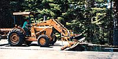
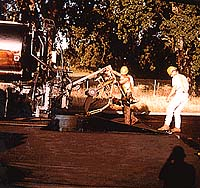
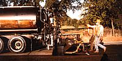
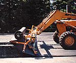
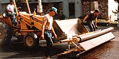
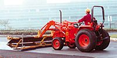
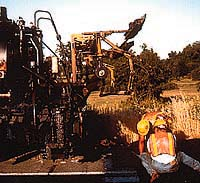
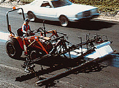

Super-heavy double-bar frame
Four-times the strength of bolt-together rigs, complete with universal mounts, brush brackets, and short-roll arm mounts.
Six U.S. Patents combined with nine state-of-the-art features deliver the world's best paving fabric installation. The patented super heavy duty double bar framework quadruples strength with universal tractor mounts for wrinkle-free laydowns every time.

Configure telescoping ranges, brush packages, and mounts to match your crew's workload.
| Spec | Grizzly 600T | Grizzly Cub 300T |
|---|---|---|
| Telescoping range | Dual-bar mainframe: 7 ft non-telescoped, extends to 20 ft with pre-drilled holes for optional hydraulic operation. | Single-bar mainframe telescopes from 1 ft to 15'6" for municipal-scale projects. |
| Short-roll capability | Patented sliding folding middle arm holds rolls 1' to 10' centered or off-centered. | Optional clamp-on folding middle arm for 1'–10' rolls. |
| Transport width | 7 ft without PVC extension; 8 ft with PVC for highway transport compliance. | 7 ft standard width; 10 ft with optional PVC extension. |
| Roll capacity | 32-inch roll diameter capacity with disc brake-controlled spindle system. | 30-inch roll diameter with rotating spindle roll holders. |
| Mount compatibility | Universal brackets fit endloader arms 25"–48" with 3/4" pin and bushing. Oil-truck mount available. | Universal brackets with quick-attach adapters for multi-task tractors. |
| Brush coverage | Patented telescoping angled brushes extend from 6'10" to 13 ft with articulating center mount adjustable 3.5" in height. | Proportional brush widths for 2-lane roadways with same patented brush technology. |
| PVC Tensioning | Patented dual bar telescoping PVC tensioning system operates 8 ft non-telescoped to 18 ft telescoped. | Same patented tensioning system at reduced scale. |
Dimensions based on existing production data; confirm final measurements during build.








Four-times the strength of bolt-together rigs, complete with universal mounts, brush brackets, and short-roll arm mounts.
Smooth adjustment keeps brush ends flush with fabric edges; optional hydraulic kit changes widths on the fly.
Dual leveling jacks, center articulation, polypropylene extra-fill brushes, and extensions for 18-foot sweeps.
Six sliding brackets double-tension the material; add dual-PVC rollers for grids and hybrid mats.
Disc brakes modulate roll speed and adapt to curves; wear parts stay inexpensive and field-replaceable.
Dual mechanical arms (single on Cub, hydraulic optional) let crews run inches from curbs, guardrails, or parapets.
Accommodate ~3–5 inch cores and can be sharpened to maintain grip on rough roads.
Rear-mounted frame lifts the rig so oil and fabric go down in one pass, then reattaches to a tractor when needed.
Retrofit a four-position articulating center brush mount, laser-cut multi-bar tension plates, and the roller module for grids or composites.
New telescoping tubes, bearings, and rotating spindle assemblies extend service life and keep roll holders steady.
We'll match upgrade kits, replacement parts, or custom fabrication to your machine's build year.